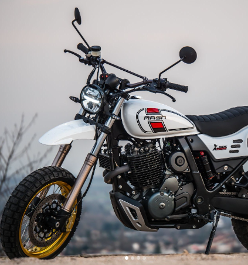
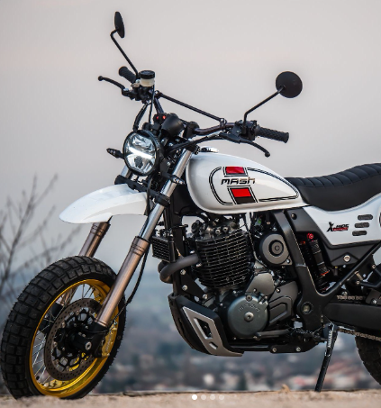

Segue-nos no Instagram
 

Mash é uma marca de motas e scooters criada pela empresa francesa SIMA, fundada em 1976.
Atualmente, a empresa é uma das maiores importadoras de motas e acessórios de França.
Desde 2006, a empresa é liderada por Frederick Fourgeaud, multicampeão de competições de motos, piloto de fábrica da Kawasaki, empresário de sucesso.
Atualmente, a empresa possui uma rede de distribuição estabelecida com mais de 400 lojas na França, Espanha, Portugal, Itália e outros países europeus.
A Mash é inspirada no estilo das motas dos anos 70. Cada modelo é feito de peças cuidadosamente trabalhadas e selecionadas, a produção é monitorada por especialistas MASH altamente qualificados.
Todas as motas estão em conformidade com os padrões europeus e são certificadas pela Comissão Europeia.
A Dude Bikes é a representante oficial da Mash Motorcycles nos países bálticos, que fornece produtos de marca e também serviços.
Representantes da empresa Kaspars Komarovs e Aivars Deme apreciaram muito o design clássico e a qualidade de produção das motas Mash, que decidiram introduzir esta marca nos países bálticos.
Agora as motas e scooters também estão disponíveis nos países bálticos, além da França, Espanha, Portugal, Bélgica, Alemanha, Áustria, Itália e Suíça.
A Daimler Reitwagen ("vagão de dirigir") ou Einspur ("pequeno caminho"), foi uma moto desenvolvida por Gottlieb Daimler e Wilhelm Maybach em 1885, e é considerada a primeira moto que existiu. Daimler é considerado "o pai do motociclismo" pela sua invenção.
A habitual condução de motos em ziguezaguear entre os restantes veículos na estrada é considerada ilegal. Este ato vai contra o estipulado no Código da Estrada, criando tensão entre condutores de motos e de outros veículos tendo, por vezes, desfechos menos felizes. De acordo com o artigo 15.º do Código da Estrada, sempre que exista mais do que uma via de trânsito no mesmo sentido, os condutores, de motos ou de carros, não podem sair da respetiva fila para outra mais à direita, salvo para mudar de direção, parar ou estacionar.
A lei estipula que os condutores habilitados com a categoria B estão autorizados a conduzir motociclos de cilindrada não superior a 125 cm3 e de potência máxima até 11 kW (categoria A1), desde que tenham idade igual ou superior a 25 anos ou, não o sendo, sejam titulares de habilitação legal válida para a condução de ciclomotores.